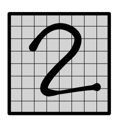
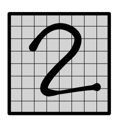

Module 4.0 - Applications
Module 4.0
Applications
Review
Example 2: Reduction
Compute sum reduction over a list
a = [4, 2, 5, 6, 1, 2, 4, 1]
out = [26]Algorithm
Parallel Prefix Sum Computation
Form a binary tree and sum elements
Table
Thread 0 |
Thread 1 |
Thread 2 |
Thread 3 |
|---|---|---|---|
4 + 2 |
5 + 6 |
1 + 2 |
4 + 1 |
6 + 11 |
(zzz) |
3 + 5 |
(zzz) |
17 + 18 |
(zzz) |
(zzz) |
(zzz) |
Reduce with Tensors
Use the blocks for the out cells (convert blockIdx to out index)
Use the threads for the reduce dim (convert threadIdx to 1d index)
What changes? Global loading. Need to use strides (what did you do in fast ops)
Dependencies

Square Matrix
Assume a, b, out are all 2x2 matrices
Idea -> copy all needed values to shared?
Basic CUDA - Square Small
Basic CUDA
def mm_shared1(out, a, b, K):
...
sharedA[local_i, local_j] = a[i, j]
sharedB[local_i, local_j] = b[i, j]
...
for k in range(K):
t += sharedA[local_i, k] * sharedB[k, local_j]
out[i, j] = tCounts? Issues?
Diagram
Large Square

Basic CUDA - Square Large
Basic CUDA
def mm_shared1(out, a, b, K):
...
for s in range(0, K, THREADS):
sharedA[local_i, local_j] = a[i, s + j]
sharedB[local_i, local_j] = b[s + i, j]
...
for k in range(THREADS):
t += sharedA[local_i, s + k] * sharedB[s + k, local_j]
out[i, j] = tToday's Class
Architecture
Memory
Communication
Architecture
Goal: Image Recognition
Data Set

Data Labels
 

{kind=link}
Data Points


Strategy
Build a neural network to classify these
Three Challenges
How do we handle input features?
How do we look at variable-size areas?
How do we predict multiple labels?
Network

Challenge 1: Input Representation
Challenge 1: Input Representation
{kind=link}
Challenge 1: Input Features

Challenge 1: Input Features

Challenge 1: Input Representation

Challenge 2: Variable Size Area

Challenge 2: Variable Size Area
Challenge 2: MNist Zoom

Challenge 3: Multiple Output


Challenge 3: Multiple Output
{kind=link}
Convolution
Challenge
How do we handle locality in features?
Example
Challenge 1: Input Features
Intuition
Same neural network as before
Brute force, run it everywhere
Hope to detect important patterns and combine them
Simplification
1D Line
1 Hidden
Convolution Forward

Computation
Output Values
output[0] = weight[0] * input[0] + weight[1] * input[1] + weight[2] * input[2]
output[1] = weight[0] * input[1] + weight[1] * input[2] + weight[2] * input[3]
output[2] = weight[0] * input[2] + weight[1] * input[3] + weight[2] * input[4]Alternative View
Unroll
input = minitorch.tensor([1, 2, 3, 4, 5, 6])
input = unroll(input, K)
print(input)
[[1, 2, 3],
[2, 3, 4],
[3, 4, 5],
[4, 5, 6],
[5, 6, 0],
[6, 0, 0],
]Alternative View
Unroll + zip + reduce
weight = minitorch.tensor([5, 2, 3])
output = (input @ weight.view(K, 1)).view(T)
print(output)
[18, ..., 30 ]Alternative View

Gradient
Output Values
output[0] = weight[0] * input[0] + weight[1] * input[1] + weight[2] * input[2]
output[1] = weight[0] * input[1] + weight[1] * input[2] + weight[2] * input[3]
output[2] = weight[0] * input[2] + weight[1] * input[3] + weight[2] * input[4]Gradient values
grad_input[2] = weight[0] * grad_output[2] + weight[1] * grad_output[1] + weight[2] * grad_output[0]Conv Back - Input
Reverse the convolutional anchor

Gradient of Weight
Output Values
output[0] = weight[0] * input[0] + weight[1] * input[1] + weight[2] * input[2]
output[1] = weight[0] * input[1] + weight[1] * input[2] + weight[2] * input[3]
output[2] = weight[0] * input[2] + weight[1] * input[3] + weight[2] * input[4]Gradient values
grad_weight[2] = grad_output[0] * input[2] + grad_output[1] * input[3] + grad_output[2] * input[4]Conv Back - Weight

Channels
Intuition
Each position may have multiple values
These may be meaningful - i.e. color channels
These may be learned - i.e. hidden states
Key Points
Convolution is a Linear applied to all channels in position
If weight is length K and there are 10 channels, the input to the linear is 10 * K.
Output channels are just like the output of the Linear.
Graphical Representation

Mathematical View
Code (note matmul on in_channels * K)
input = minitorch.rand(in_channels, T)
weight = minitorch.rand(out_channels, in_channels, K)
input = unroll(input, K).permute(1, 2, 0)
output = (weight.view(out_channels, in_channels * K) @ input.view(in_channels * K, T))Implementation
All about understanding sizes.
Should be similar to matmul, start with output
If outside boundaries, use 0
Applications
1D convolution is very highly used